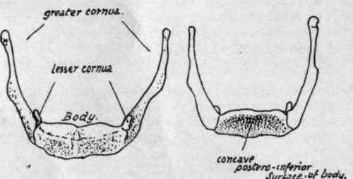
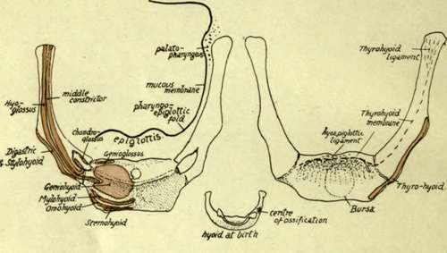
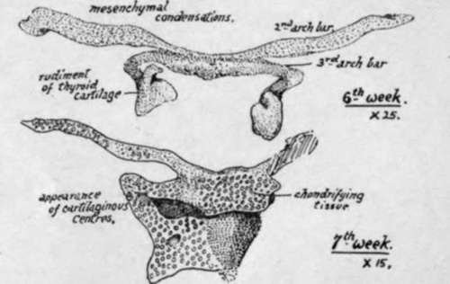
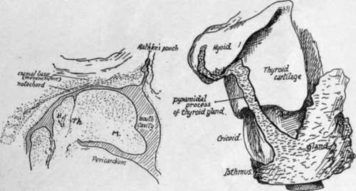
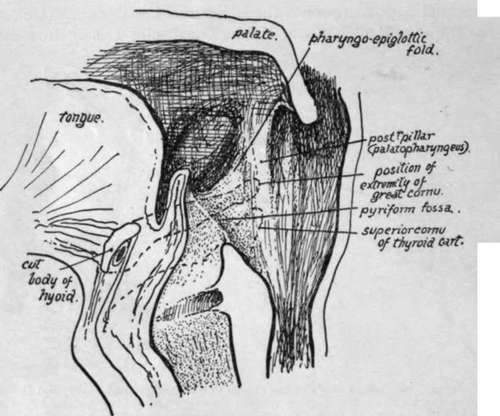

Hyoid
Description
This section is from the book "The Anatomy Of The Human Skeleton", by J. Ernest Frazer. Also available from Amazon: The anatomy of the human skeleton.
Hyoid
A U-shaped bone situated in the ventral floor of the pharynx below the base of the tongue and in front of the epiglottis. It presents a median unpaired body, a long large cornu on each side, and a small nodule, not always bony, the small cornu, situated above the junction of body and great cornu.
The body is concave on its deep or posterior surface, lodging here the infra-hyoid bursa : the bursa lies in front of the thyro-hyoid membrane, which is therefore attached to the upper margin of the posterior surface. The anterior surface is convex and divided by a transverse horizontal ridge into an upper and lower portion : the surface gives attachment to muscles of the tongue and floor of the mouth and along its lower edge to infra-hyoid muscles (Omo hyoid, Thyro-hyoid and Sterno-hyoid).
The greater cornu, flattened, has usually an upper surface that gives origin to Hyo-glossus and Middle Constrictor, a lower surface that has Thyro-hyoid and thyrohyoid membrane attached to it, a prominent outer margin which affords insertion to Stylo-hyoid and Digastric, a smoother inner edge that is in relation with the mucous membrane of the pharynx, and an enlarged extremity which is fastened to the thyroid cartilage by the thyro-hyoid ligament.
* The female skull is relatively larger : compared in weight with the rest of the skeleton it gives a ratio 1 : 6. Male ratio 1 : 8.
The lesser cornu is fastened by fibrous tissue to the body and great cornu, and by the stylo-hyoid ligament to the styloid process. It affords origin to some fibres of the Middle Constrictor and the Chondro-glossus.
The hyoid bone is an ossification of the ventral portions of the cartilaginous bars of the second and third pharyngeal arches : the dorsal end of the second bar is fused with the petro-mastoid and forms the styloid process, while the intermediate part is the stylo-hyoid ligament ; the upper end of the third bar is only indicated for a short period as a condensation of cells that ultimately disappears entirely. The lesser cornua (cerato-hyals) are parts of the second bars, while each greater cornu (thyro-hyal) represents the third bar of its side. The body is sometimes termed the basihyal, but this name should more properly be applied to the transverse ridge on the body, which probably alone represents the ventral junction of the two Lars of the second arches (Fig. 217). The more complete development of the second bar causes the small cornua to appear longer at one stage of their formation than the great cornua (Fig. 218), but it must of course be remembered that the contrast is ma'nly in appearance only, because there is no bone in the young specimen, and in the adult the large second bar is as fully represented, although by more sharply differentiated bony and ligamentous tissues.
The relation of the thyroid (median) down-growth to the hyoid is of some interest and importance ; it is frequently said to lie in or even behind the bone, but this is probably not a true statement of the case. In the early period, when the anlage of the hyoid is first recognisable, the thyro-glossal duct can be found passing altogether ventral to the rudiment of the bone. This is shown in Fig. 216. At a later stage the epithelial rod that runs down to the thyroid gland is still ventral to the hyoid but is in close contact with it, and is in fact folded somewhat round its lower edge (Fig. 216), so that a potential thyroid tube might remain behind the plane of the body although it has not got there by growing down behind the hyoid. This is the condition found in all normal embryos and young foetuses, and the occurrence of thyroid cysts * or fistulaa are persistences of this earlier state.
The bursa that lies behind the body of the bone is median in position, and for this reason is probably not derived from the thyro-glossal duct : on each side of it the hollow in the bone is filled by fibro-fatty tissue. The hne of attachment of the thyro-hyoid membrane can usually be made out above the hollow, and in the central part some fibrous tissue connects the bone with the epiglottis. The front surface is practically altogether muscular, and the transverse ridge is plainly not a secondary marking on the bone, in that it does not define any muscular area, but (Fig. 217) is covered by one of these on each side : the ridge connects the regions of the lesser cornua and probably marks the basal part of the second bar. It is sometimes partly separated from the rest of the body. The median vertical ridge, however, may be looked on as a secondary line where it lies below the horizontal ridge ; but the part above this ridge, though possibly in part secondary, may have some atavistic value, for it sometimes shows a short process that has been homologised with the " entoglossal process " found in some lower animals.
Fig. 215.-Female hyoid from the front and from behind.
* Such cysts are usually unilateral and-so far at least as I have had opportunity of examining them- even when they seem to extend up behind the bone the proper relation may be made out with a little trouble and the continuity of the bone established behind them.
Fig. 217.-Attachments to hyoid. Observe the area occupied by insertion of Geniohyoid, and how the Hyoglossus encroaches on this area on the body, being also attached to the whole length of the great cornu outside the middle Constrictor. Genioglossus has only a very small area behind Geniohyoid, and Mylohyoid has a linear insertion just above the infra-hyoid muscles. Digastric and Stylohyoid are on the lower edge of the great cornu and do not reach the body, but Thyrohyoid, on the deep side of the edge, reaches also the edge of the body. Ligamentous hyo-epiglottic fibres are attached above the thyrohyoid membrane. Chondroglossus, middle Constrictor, and stylohyoid lig. are attached to the small cornu. The central figure shows the hyoid at birth, cartilaginous but for a centre in one great cornu : observe the cartilaginous bar joining the lesser cornua. In the left-hand figure the relation of mucous membrane and Palato-pharyngeus to the bone is indicated.
Fig. 218.-Early conditions of the hyoid and thyroid cartilages; from models.
The greater cornu presents a prominent angle, particularly in male bones, at its outer and front part : this is made by the attachment of the expansions of Digastric and Stylo-hyoid.
The lower and back margin has the thyro-hyoid membrane attached to its whole length. The upper surface has the Middle Constrictor arising from its length, and the fibres of the muscle cover the extremity of the cornu as they turn down into the wall of the pharynx : all the origin of the Constrictor is hidden by the Hyo-glossus, which also arises from the length of the cornu and extends on to the body for a little distance, lying outside the lesser cornu. The lesser cornu and the stylo-hyoid ligament are in the plane of the Middle Constrictor, which arises from them : the Digastric and Stylohyoid are superficial to the Hyo-glossus and therefore cannot be attached to the small cornu. Any fibres arising from the small cornu must be deep to Hyo-glossus, and thus, beside the Constrictor, we find the Chondro-glossus arising from the inner aspect and passing up to the deep aspect of the Hyo-glossus.
Fig. 216.-1, sagittal section through the region of the mouth in an embryo of the fifth week, showing the track of the median thyroid downgrowth ventral to the hyoid rudiment. M. mandibular arch. 2, from a model exhibiting the thyroid stem in position as normally seen, partly wrapped round the hyoid, but properly on the ventral aspect. Early in third month.
The muscular areas on the bone are shown in Fig. 217 and a description given of the limits of the areas : observe especially that Hyo-glossus reaches the body, Thyrohyoid does the same, Genio-glossus has a very small insertion, and Genio-hyoid has the largest insertion on the body.
The bone lies in the level of the second to third cervical vertebras, and about on a level with the lower margin of the lower jaw when the head is held in the natural position. The body can be felt with difficulty from the surface owing to the covering of muscle fibres, and the same is true of the greater cornu ; the small cornu is not palpable. The cornua can be felt from within the pharynx (Fig. 219), but the body is rather hidden from this aspect by the epiglottis : the great cornu lies under the pharyngo-epiglottic fold and the mucous membrane in the upper part of the pyriform fossa, the floor of which rests (below the hyoid) on the thyro-hyoid membrane and upper part of the thyroid ala.
Development
The mesenchymal structure shown in Fig. 218 is chondrified from centres that appear in it in the fifth or sixth week. A single median cartilaginous centre is found early in the back of the rudiment of the body. Other chondral centres appear (as seen in Fig. 218) in the bars of the second and third arches. The whole structure is chondrified from these centres during the third and fourth months, and at birth (Fig. 217) bony centres have just appeared near the ventral ends of the great cornua. The body is ossified from a single (? paired) centre showing shortly afterwards, but the small cornua apparently do not commence to ossify until just before puberty. The extremity of each great cornu remains cartilaginous until nearly middle life : epiphyses have been described for these ends.
The body and great cornua may fuse after middle life ; the small cornu may join the greater, or in rare cases may fuse with the body.
Fig. 219.-Diagram of section through the pharynx in a sagittal direction to show the position of the great cornu and upper cornu of thyroid (interrupted lines) to the folds and fossa; in that region. The cavity is shown opened out. Fibres of Palatopharyngeus run down on the inner side of the extremity of the greater cornu, under the mucous membrane.
Continue to: